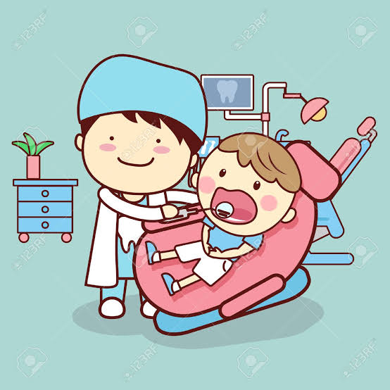

การตรวจช่องปากจากทันตบุคลากร
ผู้สูงอายุควรตรวจช่องปากตัวเองสม่ำเสมอ เพื่อสังเกตอาการผิดปกติ
พบทันตบุคลากรอย่างน้อยปีละ 1 ครั้ง เพื่อรับการตรวจและรับบริการส่งเสริมป้องกัน เช่น
การขัดฟัน เพื่อลดการอักเสบของเหงือก
การทาฟลูออไรด์แบบเข้มข้น เพื่อป้องกันและหยุดยั้งฟันผุและรากฟันผุ
และรับการรักษาโรคในช่องปากและฟื้นฟูสภาพตามความเป็นจริง
การพบทันตบุคลากรตั้งแต่เริ่มแรก ทำให้มีโอกาสเก็บรักษาฟันได้มากขึ้น
